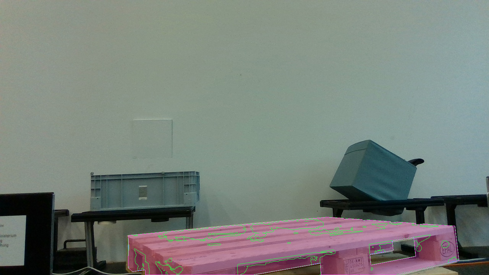
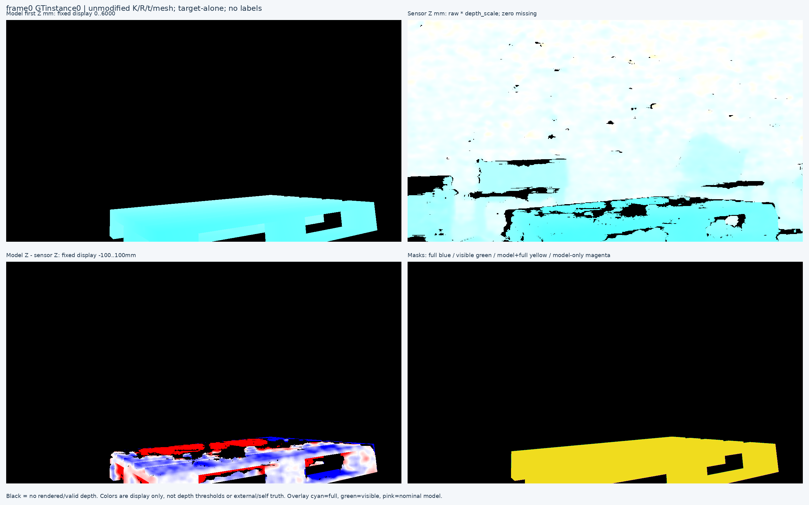
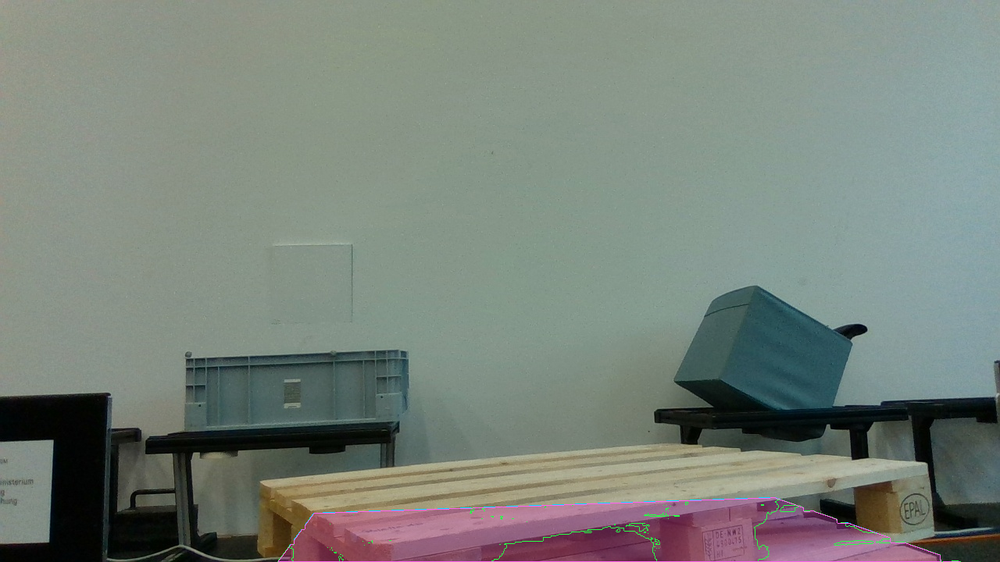
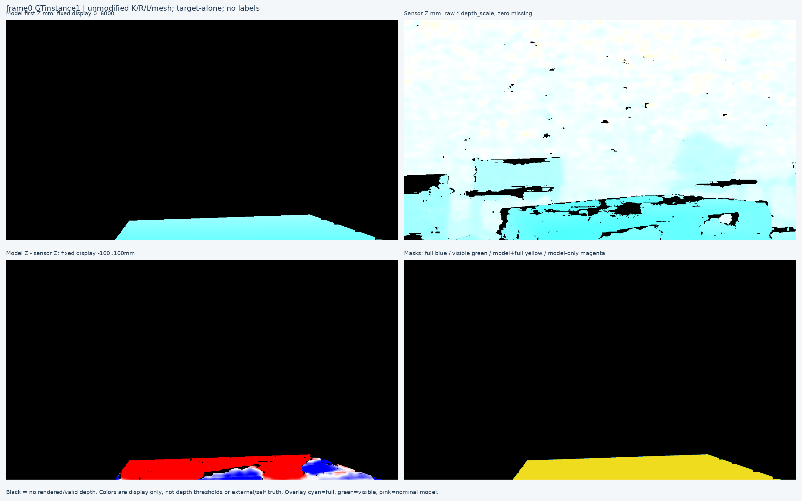
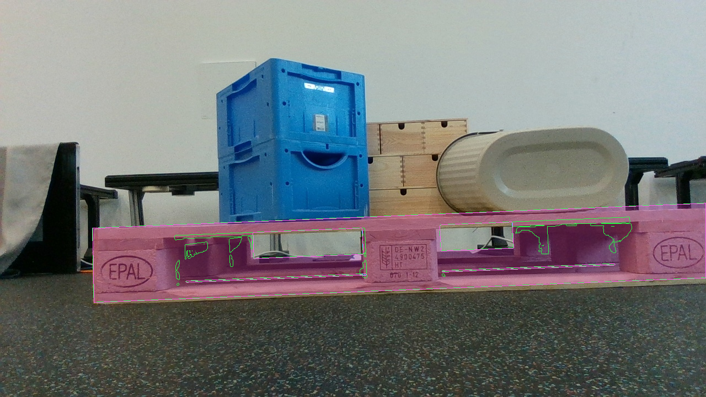
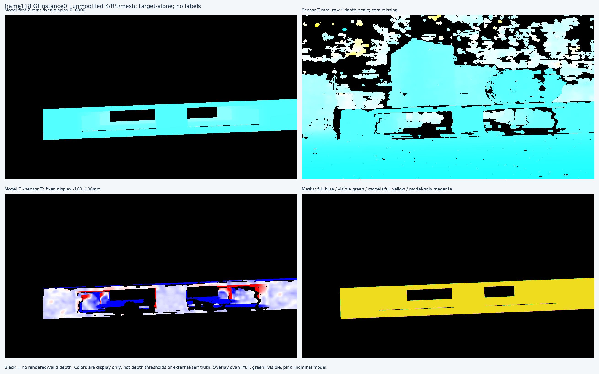
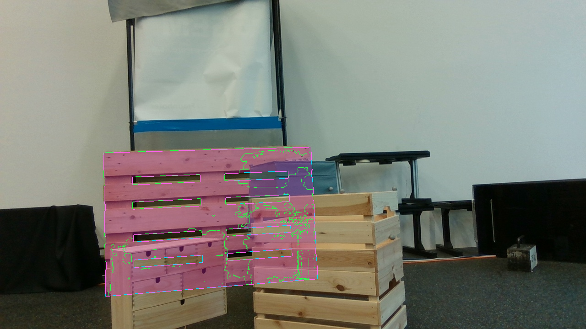
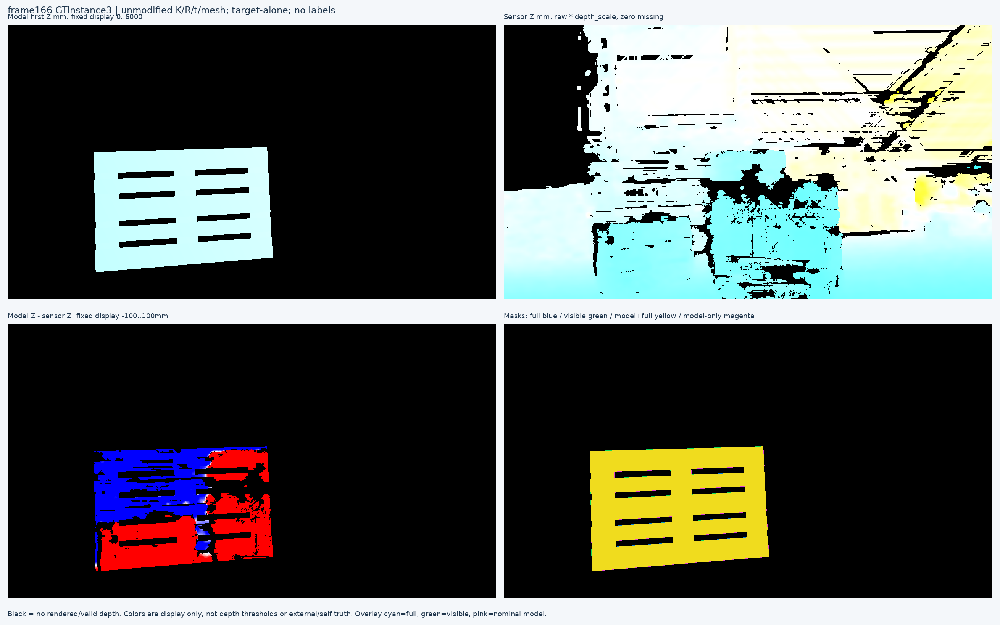
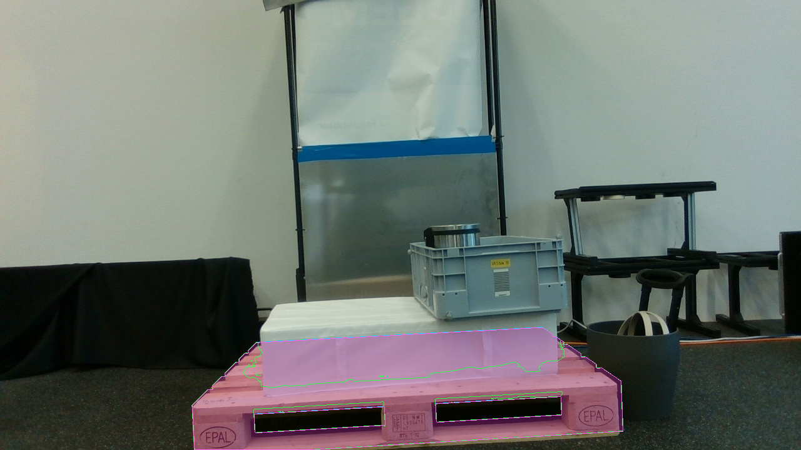
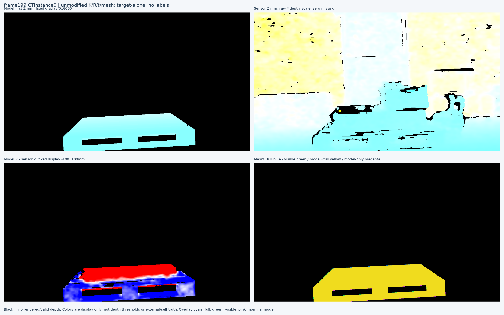

공개 SOURCE TRAIN 4프레임·obj1 instance 5개의 고정 등록 probe와 독립 first-surface 계산 검산을 완료했다. 새 모델 개선 또는 직접 부위·가림 정답 확보를 뜻하지 않는다.
전체 목표 미해결 · 모델 채택 없음 · 새 라벨/학습 편입 0
MR6D의 내부 SOURCE_DEVELOPMENT인 scene000000/000002/000005/000006의 원래 첫 프레임과 obj1 GT-list instance 전체입니다. 상류 폴더명은 val이지만 held scene000001은 포함하지 않았습니다. 원 mesh·K·R·t와 초기 q/L/native를 변경하지 않았습니다.
| Frame / GT | Source | Full mask IoU | 제공 visible N | 센서 결측 N | 잔차 측정 N | Z차 p5 mm | 중앙값 mm | p95 mm |
|---|---|---|---|---|---|---|---|---|
| 0 / 0 | val/000000:0 | 99.09% | 86,652 | 15,322 | 70,912 | -112.08 | -22.02 | 13.21 |
| 0 / 1 | val/000000:0 | 99.17% | 18,017 | 2,581 | 15,362 | -142.58 | -56.96 | 10.95 |
| 118 / 0 | val/000002:0 | 98.29% | 128,483 | 27,673 | 99,894 | -624.29 | -16.25 | 7.90 |
| 166 / 3 | val/000005:0 | 98.34% | 67,204 | 23,834 | 42,851 | -341.80 | -190.71 | -89.21 |
| 199 / 0 | val/000006:0 | 98.78% | 62,474 | 4,194 | 57,930 | -191.90 | -82.36 | -13.25 |
제공 visible mask ∩ target-alone rendered silhouette ∩ positive finite sensor-depth 안에서 model camera-axis Z − raw_depth × supplied depth_scale. 단위 mm, 원 부호·분위수 그대로. Sensor0은 결측이며 가림/배경으로 채우지 않는다.
센서 결측 N은 제공 visible mask 전체 안의 raw depth 결측입니다. 잔차 측정 N은 그 중 렌더 지지와 유효 센서 깊이가 동시에 있는 별도 분모입니다. p5·중앙값·p95는 이 측정 분모의 원 signed 값입니다.
별도 PLY parser와 camera-ray/triangle first-hit 계산으로 고정 400개 slot을 유지했습니다. 깊이 hit 일치 107개, no-hit 일치 281개, 투영 OOB 12개이며 interior 불일치는 0입니다. 비교된 깊이의 최대 절대차 1.40972e-11 mm는 사전 고정한 F64 기준 1e−6 mm 이내였습니다. 이 검사는 렌더 구현의 계산을 확인합니다.
Full-mask IoU는 nominal 모델·pose silhouette와 제공 full mask의 정합 비교다. 독립 RGB 재료 경계·정확한 부위·native8 정답 정확도로 해석하지 않는다.
Frame0의 두 provided visible mask는 9,988픽셀 겹치며, full mask도 46,418픽셀 겹칩니다. 이 겹침을 지우거나 배타적 소속 정답으로 바꾸지 않았습니다.
원 sensor depth의 RGB/depth optical-frame 및 alignment/export 처리는 검토한 공개 문서만으로 확정되지 않았습니다. 음수 residual의 원인을 특정 물체·pose·scale·alignment로 단정하지 않으며, 잔차를 줄이기 위한 변경도 하지 않았습니다.
Clean RGB는 별도 보존되며 overlay와 depth 색도표는 표시용 복사본입니다. 기존 root6+A8 tools.view_image 영수증으로 원 RGB4장·overlay5장·depth진단5장의 합동 검토 범위를 확인했습니다. 이 builder의 새 이미지 판독이나 HTML browser render를 주장하지 않습니다.
원 4장·5instance 전체 gallery · 원 raw summary JSON










WOOD/SQUARE·native8의 원래 목표는 유지합니다. 이 단계에서 classifier/SAM/encoder/initializer 실행·새 학습·PnP·pose fit·q/L 수정·새 감독 라벨·학습 편입은 없습니다.
수치·분모·원 영수증 바인딩 · 독립 ray 검산 · 공개 depth 문서 권위와 미확정 항목 · 실제 이미지 QA